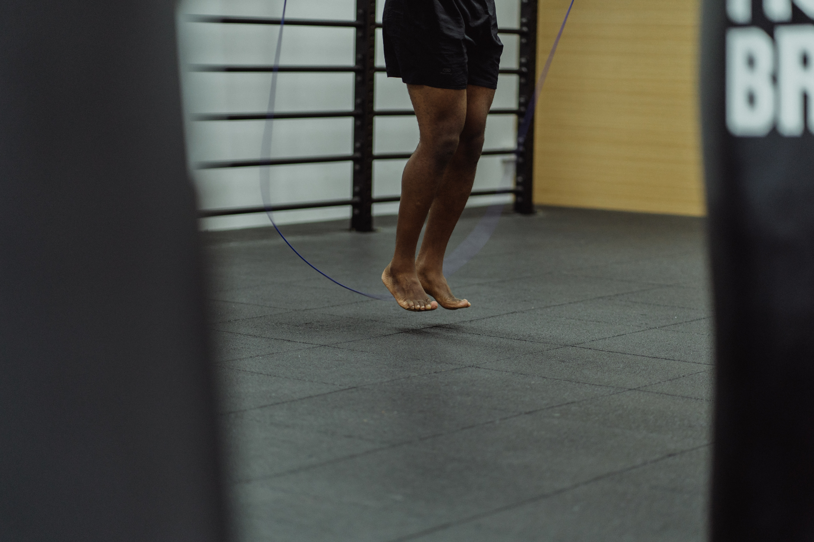

En kombination af de to træningstyper resulterer i at man forbrænder en masse fedt, og dermed er det en god måde at træne på hvis man vil forøge kroppens styrke og forøge sin kondition. Samtidig forbrænder man ved begge typer af træning mange kalorier og vil derfor opnå en lav fedt procent, hvilket vil resultere i at din krop vil blive markeret og man får et ”atletisk” udseende. Man opbygger også muskler gennem calisthenics, dog er der andre træningstyper der vil resultere i en større muskelopbygning end denne form for træning fks. Styrketræning. Oftest vil man kunne kombinere de to træningstyper på flere forskellige måder, man kan enten træne cardio og calisthenics sammen, men man kan også lave et program hvor man fordeler dagene så man har hver sin træningstype planlagt for hver enkelte dag. Det er også vigtigt at man benytter sig af flere forskellige slags cardio når man kombinerer det med calisthenics, så det ikke er de samme muskelgrupper man belaster hele tiden. Et eksmpel kunne være sjipning, hvor leg muskelen er den primære muskel man bruger, hvis man belaster den samme muskel kan det resultere i skader og andre skavanker hvilket man gerne vil forsøge at unddgå. Derfor kan man fks. Den ene dag sjippe, hvor man så en anden dag kan svørmme, hvor det primært er arme, bryst, hofter og lårene man aktiverer. Når man vil kombinere sin cardio træning med calisthenics er det også vigtigt at aktivere alle kroppens muskelgrupper, da det er vigtigt i forhold til at få hele kroppen styrket og ikke kun enkelte muskelgrupper.
Styrketræning kombineret med cardio
Cardio og calisthenics er to træningstyper der giver ekstrem meget værdi at sammenkoble. Cardio i sig selv er en træningstype der har vægt på at styrke kroppens kredsløb, og dermed forbedrer din kondition. Altså opnår man ikke muskelopbygning ved at træne cardio. Calisthenics har fokus på at forbedre kroppens fleksibilitet, adræthed og styrke. Man opnår muskelopbygning gennem calisthenics træning, men det er ikke hovedfokuset ved denne type træning.
